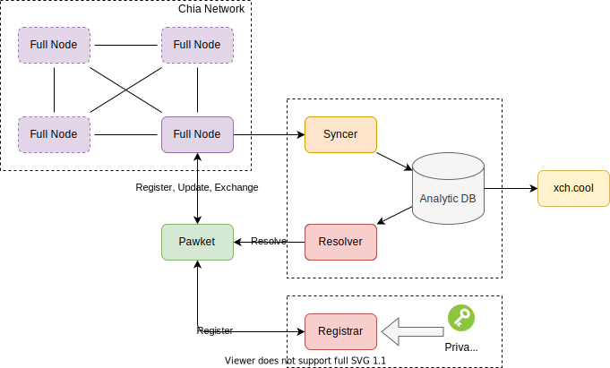

Chia Name Service White Paper
Draft v0.1
October 2022
Introduction
About
Chia Name Service (CNS) is a decentralized ecosystem built on Chia Blockchain with its UTXO model and Chialisp Smart Contracts. CNS not only aims to provide name service to users on Chia Blockchain, but also provides cross-chain service with verifiable proof from the most secured blockchain - Chia.
CNS generates the name with the .xch suffix, the name is able to resolve various types of data both on-chain or off-chain, including addresses, content, websites, social accounts, etc. Owners have full ownership and management permission. CNS owner can trade the name like a normal NFT.
Our Vision
CNS is a universal name service that seamlessly connects people, information, assets, and applications in the digital world. Although it is secured by Chia Blockchain, it is chain-agnostic. The CNS is a decentralized, censorship-resistant, and open-sourced digital gateway to Web 3.0.
Our Goals
- Realize a secure, transparent, and open-name service.
- Serve as a digital gateway for a person or an organization to Web 3.0.
- Interoperate between Web 3.0 and the Web 2.0.
- Build a universal name service for all digital worlds.
Features
- Domain Name. Allow users to register a single unique domain name for easy memory and access. Domain names can be registered, modified, queried, and transacted on-chain.
- NFT. CNS is recorded on the chain in the form of NFT, which can be easily queried and interacted with by any application or user. CNS is unique and indivisible and can be transacted and circulated as the NFT in the marketplace. The attribute of the domain can always be modified by the owner, others have no chance to manipulate it. The attribute can be modified by any compatible wallet/client.
- Digital Gateway. The CNS can store a collection of personal identity data, and represent the unique identity of Web3. Different digital assets can be linked to the CNS, allowing it to become a unique gateway to multi-chain networks. Subdomains can be created for members of the company, community, or organization as validate credentials. By integrating multi-chain data and even the legacy network data in a single place, the Digital Gateway of Web 3.0 to all your assets is formed.
Use case
- Simplified Payments Instead of having to remember someone’s Chia wallet address, you can easily send them a payment just by knowing their domain name. CNS implements a smart contract that will resolve the chosen domain to the correct address on the blockchain and issue the payment.
- Custom Information Storage Users can store arbitrary custom information (in the form of key-value pairs) with their domain on the blockchain. This can be useful, for example, if they wish to provide publicly available contact information, such as their email, Twitter handle, etc.
- Subdomains
Owners of domains can mint subdomains which offer even more ability for customization. For example, businesses can have several payment addresses and a unique subdomain linked to each one of them. For regular orders they might use
pay.business.cnsand for express deliveryexpress-pay.business.cns. Another example of subdomain usage would be for displaying different website content, like theblog. cnsfor blog posts andcontact.blog.cnsto show additional contact information.
Domains in Blockchain
Ethereum Name Service
On the Ethereum blockchain, Ethereum Name Service is the most notable name service. The main smart contract is called the Registry, which contains a mapping from domain names to their Resolvers. Each Resolver is another smart contract, which maps domain names to their actual records (for example Ethereum addresses or content hashes). Therefore, to resolve a domain, one first has to look up the correct Resolver in the Registry and then perform the actual resolution. Since Ethereum often has periods of very high transaction traffic, which leads to extreme transaction fees, Ethereum-based projects inevitably inherit these drawbacks.
FIO protocol
The FIO Protocol is a decentralized service layer that bridges the gap between crypto endpoints such as wallets, exchanges, crypto payment processors, and any other application in which crypto assets are held and/or transferred. The FIO Protocol reimagines and enables a better way of sending and receiving blockchain-based value, regardless of the wallet, exchange, token, or coin used. It is worth mentioning that FIO has its blockchain but only acts as a service layer independent of other public chains, which ensures the security of address data on the one hand and ensures that the domain name service is not disrupted by the public chain on the other.
BONFIDA
BONFIDA is a decentralized name service build on the solana blockchain, which has a simple mission of providing a decentralized and yet affordable way to map domain names (represented as .sol) to on-chain data. Where on-chain data can be anything from a Solana (SOL) address to IPFS CID, images, text, and more.BONFIDA supports the domain name exchange in auction way.
Design
Principles
Name Principles
According to Zooko's triangle, the name should follow:
- Human-meaningful, names can be meaningful and memorable to humans.
- Secure, as long as the Chia Blockchain Consensus is concrete, the CNS can survive various attacks.
- Decentralised, every entity can start its resolver service without any central authority.
Everything On-Chain, Non-custody
- All critical information is On-Chain, non-custody.
- Every domain is an NFT, and can be transferred and exchanged.
- Owner of the domain can change the domain reference address afterward, and these changes are also On-Chain.
- Protocol is open, you can register, update and exchange in a compatible wallet.
Resolver
- The Off-Chain resolver will provide a quick domain resolving service.
- Every resolved result can be verified in every full node(by retrieving and parsing an NFT coin's puzzle and solution), Or theoretically by an SPV protocol and even a ZKP protocol. This can avoid malicious resolver attacks and MITM attacks.
- Resolver would respond not only to the address itself but also come with some critical information(like how long the reference address is stable, which can be done easily by confirmed_index of the domain NFT).
- Resolver is decentralized, even if we disappear, another team can take up the role and provide the resolving service by collecting information from the On-Chain information.
Lifecycle
stateDiagram-v2
direction LR
Available
Grace: Grace Period
Decaying: Decaying Period
Available --> Leased : Register
Leased --> Grace : Expire
Grace --> Leased : Reclaimed
Grace --> Decaying : Over
Decaying --> Available : Over
Decaying --> Leased : Register
Available Domains
Domains that are available can be immediately leased. Users will be required to pay leasing fees for one or more years. Leasing fees will be dependent on the length of the domain name.
Leased Domains
Leased domains will be represented by ERC721 tokens. The owner of the token will be able to top up leasing fees, transfer the token, and make use of the token (i.e. by using the naming system).
Grace Period
If the registration of a leased domain expires, the domain will enter into a grace period. During this grace period, the owner of the domain will not be able to perform any actions using the token (e.g. setting records on the domain, transferring the domain, etc.). The owner will have the option of reclaiming the domain by paying the lease fees on the domain during this period.
Decaying Period
If an expired domain is not reclaimed during the grace period, it will enter into the Recycling Period. During this period, an auction is used to re-distribute the domain.
Registration
CNS domain names will be assigned through retention, public registration.
- The domain name of an important website will be retained for three years, and domain holders can verify the domain through their domain name certificate in a private manner.
- Domain names with 7 or more letters are open for public registration on a first-come-first-served basis.
To use the domain name, users must register a domain. Domain registration is a Chia NFT with some special properties:
- Domain registrations always have expiry dates. To keep a domain, users must make sure to renew the domain before it expires.
- Expired domains are sold at auction. Expired names that are not sold at auction can be registered by others.
Renewal
- The renewal cycle is year based.
- Names have a minimum registration period of 1 year, and the maximum period is 10 years.
Expiry
- If the domain name is not renewed by the expiration date, the name will enter a renewal grace period of 90 days, the user can renew it within such period.
- During the renewal grace period, the name would be invalid, and all modifications to it would be ignored.
carried out the “decaying price premium” [10], where the price of expired names will start at $2,000 combining with normal annual rent and will decrease linearly to normal annual rent in 28 days.
Policy
Names in CNS follow the convention:
<name>.<domain-suffix>
For example, hiya.xch or icer.xch Each field is explained below:
- Domain Suffix. The domain suffix (such as .xch) identifies the registry to which the name belongs.
- Name. Name is the main identifier that accepts numbers, letters (case insensitive), _(underscore), -(dash).
Emoji will be transformed into Unicode, for example, 😊 = 567890 = xn-567890，thus 😊.xch is equivalent to xn-567890.xch.
Retention mechanism
In order to prevent scammers, it was decided to add a safeguard mechanism by preserving some domains for people who might be at risk of being impersonated.
The domain name of an important website will be retained for three years, and domain holders can verify the domain through their domain name certificate in a private manner, and the retained domain names are as follows:
TODO:
- All country names (including abbreviations)
- Top 500 city names in the world
- Top 100 projects on CoinMarketCap
- Names in the list of Alexa top 100,000[alexa] domains are also pre-reserved for further inclusion of existing stakeholders (with deduplication and common words down to above 80,000 names). The latter names are converted to top-level domains by selecting their first domain name label.
These domains will appear as “RESERVED BY ChiaNameService”
Subdomains
NFT
NFT compatibility
Domain NFT is full compatible with Chia NFTv1, and can be traded, exchanged, transferred, and modified.
Technical Architecture

- Full Node 全节点。用来实时获取Chia区块链上的数据。
- Syncer 同步器。用来将全节点上的数据进行实时分析，并存入数据库备查。
- Resolver 解析器。接受用户的域名解析请求，提供域名解析的结果。
- Registrar 注册器。接受用户的注册请求，提供注册域名的NFT Offer。确定域名合法性的核心私钥存在此处，需高安全级别的保护。
- Pawket 钱包。用户的区块链终端，可以进行去中心化的注册、解析、验证、更新和交易工作。
- xch.cool 概况网页。通过该网站的个性化网页可以看到账户所拥有的NFT、CAT、XCH等资产信息。
钱包的功能
- 注册：向注册器提交注册请求，如果该域名可用，则可以获得该域名的的NFT Offer，在钱包签名后直接向全节点发送交易完成注册。
- 解析：向解析器发起解析请求，提供域名获取对应的基本信息及NFT硬币信息。
- 验证：根据解析时获取的NFT硬币信息，通过全节点进行验证，验证1）该硬币为合法有效的域名NFT；2）与解析信息一致。
- 更新：构造更新NFT的交易信息，并提交至全节点上链。
- 交易：域名NFT全兼容正常的NFT，可以在所有能做NFT交易的市场上进行交易。
Analytic DB
::: mermaid erDiagram sync_coin_class { bigint id PK bytea coin_name bytea puzzle json parsed_puzzle bytea solution text mods json analysis } sync_block { bigint id PK bool is_tx_block bigint index bigint weight bigint iterations bigint cost bigint fee bytea generator bytea generator_ref_list json block_info bool tx_parsed } :::
::: mermaid erDiagram ext_singleton_record { bigint id PK bigint last_coin_class_id bytea singleton_coin_name int singleton_create_index bytea bootstrap_coin_name bytea creator_puzzle_hash bytea creator_did text type } ext_singleton_history { bigint id PK bigint coin_class_id bytea singleton_coin_name bytea this_coin_name int this_coin_spent_index bytea next_coin_name bytea p2_owner bytea did_owner text type } :::
- type: "CatV2" | "DidV1" | "NftV1"
接口定义
Resolver
- API: /resolve
- Request:
- queries: array
- name: string 域名
- type: string 解析类型，目前只支持
address
- queries: array
- Response:
- answers: array
- name: string 解析的域名
- type: string 解析类型
- time_to_live: number 域名的更新周期
- data: string 解析的内容，每种类型不一样，
address对应绑定的xch地址 - proof_coin_name: string 证明解析结果的硬币名称，即该NFT UTXO的父硬币
- proof_coin_spent_index: number 包含证明解析结果硬币区块的高度
- nft_coin_name: string 该域名的NFT名称
- answers: array
- Request:
Registrar
-
API: /register
- Request:
- name: string 域名
- address: string 绑定的xch地址
- content_hash: string 验证内容的哈希【暂未开放】
- text: string 任意文字内容【暂未开放】
- dns: string DNS记录【暂未开放】
- pk: string 公钥信息【暂未开放】
- Response:
- name: string 域名
- offer: string 注册域名的offer
- Request:
-
Register Offer Coins
- Bootstrap Coin -> Launcher Coin
- Launcher Coin (Singleton Coin) -> NFT Hint Coin
- NFT Hint Coin -> Settlement Payment(NFT)
- Settlement Payment(XCH) -> Registrar Address
Name Registration
As shown in the above figure, the name registration process involves 5 major steps: Generate Logic Signature The desired name is used as input to a standardized TEAL program and compiled, thereby creating a Logic Signature from the resulting TEAL program. Pay Name Registration fee to the escrow address The user must pay the name registration fee to the smart contract's escrow account. The total price is dependent on the length of the name and the desired number of years. Fund Logic Signature In order to be able to opt-in to Registry Smart Contract, the Logic Signature must possess 1.2 ALGOs. To meet this requirement, the Logic Signature account is first funded from the future name owner's wallet. Opt-In to Registry Smart Contract Once the Logic Signature representing the desired name is funded with the required minimum balance, an Opt-In transaction is processed to allow the Logic Signature account to be able to allocate local storage on the Name Registry smart contract. This transaction is signed and sent using the Logic Signature account. Add Owner's Address After opting-in to the Name Registry smart contract, the name owner adds their wallet address as the owner of the name by adding a local storage byte key-value. The name owner mentions Logic Signature account address in the accounts array of the transaction.
Name Lookup
Name Transfer
Name Binding
Registration
Register Tutorial
Preparation
-
Pawket Wallet or Chia Official Wallet
-
Chia Name Service official website: https://xch.cool/
Registration
-
Enter the domain name you want to register in the search box (6~63 characters), and click Search.

-
If the name can be registered, it will display 【Available】.

- If it has been registered by others, it will display Registered, click to view its profile homepage.

- If the searched name does not meet the registration rules, Unavailable will be displayed.

-
Check domain name basics (name, registration fee, annual fee, royalties, etc.). After confirmation, click Register to continue registration.

-
Enter the CNS binding address and click Register.
- Binding address is optional.
- If you do not fill in the binding address, the default asset address is the purchase (owner) address; after transferring or selling, the asset address is automatically changed to the new owner address.
- It can be inconsistent with the purchase address. The purchase address will hold the NFT of the CNS, and the binding address is the asset address of the CNS. After transferring or selling the NFT, the binding address remains unchanged. If you need to change it, you can change it manually.

-
Registration Method 1: Download the offer file or copy the offer text, accept the offer in the Pawket wallet/Chia official wallet, submit the transaction successfully and confirm it on the chain, and then the registration is successful.

-
Registration Method 2: Click Register by Pawket to connect to the Pawket wallet.

-
Enter the wallet password and click Next.

-
Select a trading account and click Connect.

-
Check the transaction information, add fees (optional) as required, and click Sign.

-
Click Submit and the upper right corner will prompt "Submitted to memory pool", indicating that the transaction has been submitted. Wait for a few minutes, and after confirmation on the chain, the registration is successful, which can be viewed in the wallet NFT or CNS.

-
准备工作
-
Pawket 钱包/官方钱包
-
Chia Name Service 官网：https://xch.cool/
注册
-
在搜索框内输入想要注册的域名名字（6~63个字符），点击【Search】。
-
若可注册，会显示【Available】字样。
- 若已被注册，会显示【Registered】字样，点击可查看其个人主页。
- 若所搜索名字不符合注册规则，会显示【Unavailable】字样。
-
确认域名基本信息（名称、注册费用、年费、版税等），确认无误后，点击【Register】进入注册流程。
-
输入 CNS 绑定地址，点击【Register】。
- 绑定地址选填。
- 若不填写绑定地址，则默认资产地址为购买（持有者）地址；转发或者售出后，资产地址自动变更为新的持有者地址。
- 可与购买地址不一致，购买地址将持有该 CNS 的 NFT，绑定地址为该 CNS 的资产地址；转发或者售出改 NFT 后，绑定地址不变，如需更改，可手动更改。
-
注册方式1：下载 Offer 文件或者复制 Offer 内容，在Pawket 钱包/官方钱包 接受 Offer，交易提交成功并在链上确认，即可注册成功。
-
注册方式2：点击【Register by Pawket】连接 Pawket 钱包。
-
输入钱包密码，点击【Next】。
-
选择交易账户，点击【Connect】。
-
检查交易信息，根据需求添加 Fee（可不加），点击【Sign】。
-
点击【Submit】，右上角提示“Submitted to memory pool”，表示交易已提交，等待几分钟，在链上确认后，即注册成功，可在钱包 NFT 或者 CNS 中查看。
-
Resolution
What is Forward Resolution? Let's say you want to send your friend 1 AVAX. Normally, you must ask for their wallet address (0x0000…), and then you can transfer to that address. Unfortunately, the address is difficult to remember.
To simplify the process, you can use a domain name. Your friend can register johndoe.avax, and configure johndoe.avax to resolve to their wallet address. Then, you can transfer them funds knowing only their domain name.
Read more about Forward Resolution and how to enable it.
What is Reverse Resolution? Reverse Resolution is the process of taking a piece of data like a wallet address (0x0000…) and finding the related .avax domain.
For example, if you are playing a GameFi game, you are likely identified by your wallet address. You can enable reverse resolution to allow users to find your .avax domain using your wallet address. With your .avax domain, the game can pull more information such as an avatar.
Read more about Reverse Resolution and how to enable it.
Management
Renewing
Subdomain
Like in the DNS, in the CNS hierarchy, a subdomain is a domain that is a part of another (main) domain. For example, if a domain offered an alternative alias address for receiving donation as part of their main CNS pawket.xch, it might use the subdomain donate.pawket.xch.
The CNS has a tree structure or hierarchy, which includes nodes on the tree being a domain name. A subdomain is a domain that is part of a larger domain. Each label may contain from 1 to 63 octets. The full domain name may not exceed a total length of 253 ASCII characters in its textual representation.
Different than traditional DNS, there are two ways to implement subdomains:
- NFT Approach. Subdomains can be NFT as main domain does, and they will be valid if: The issuer address is the address bound to main domain. Also, this means the subdomain would be invalidated when main domain's bound address changed.
- Non-NFT Approach. Subdomains work as resolver respond resolving result, and they will be valid if: The main domain bound a resolver address(A record or CNAME) to it, and the resolver resolves the corresponding subdomain.
NFT Approach (Onchain Resolver)
CNS main domain owner only have issuer right over all these subdomains. Owner of main domain may:
- Invalidated all subdomains (NFT) at once by change the bound address of main domain.
Owner of main domain without ownership of subdomain cannot:
- Change ownership of the subdomain
- Change any bound property including address of this subdomain
In this approach, a delegated resolver is acceptable, any on-chain resolver service could serve subdomain with/without fees.
With this approach, main domain owner can issue the subdomain NFT with full customization ability, so the main domain owner can issue subdomain NFT with their own branding on the NFT image, or they can replace the traditional NFT with CNS NFT without losing any existing attribute, but with CNS merit.
Non-NFT Approach (Offchain Resolver)
CNS domain owner have full ownership of all these subdomains. Owner of main domain may:
- Invalidated all subdomains (NFT) at once by change the bound address of main domain.
- Change ownership of the subdomain
- Change any bound property including address of this subdomain
In this approach, a dedicated resolver is required, some service provider may deliver a aggregated resolver service, but without onchain information, the resolver response cannot be validated by wallet client.
Comparison
| Approach | Pros | Cons |
|---|---|---|
| NFT Approach | ✅Onchain verification ✅Reuse or delegate onchain resolver ✅Customize NFT | ❌Cannot change ownership of subdomain ❌Cannot change bound property |
| Non-NFT Approach | ✅Full ownership of subdomain | ❌No onchain verification ❌Dedicated offchain resolver needed |
Security
Deployment
- Valid Registrar Address: TODO
- Fee Accountant Address: TODO
Risk Mitigation
- How to prevent/mitigate domain squatting.
- How to restrict or respect expiry policy (for the cost of a yearly renewal).
- How to verify a domain without a central authority. (the mechanism used by keybase can be a great inspiration.)
- When we need more metadata (maybe large) to be associated with the domain, how this metadata can be properly handled and stored?
- How we work with others to spread the usage of CNS and even integrated it into the Official Client.
Governance
参与方式
为什么要参与，能参与什么
参与后可以获得什么
治理
如何做治理
注册规则（试行）
- 试运行期间，您的注册期默认为一年期；且目前仅支持注册6位字符及以上的CNS。
- 试运行期间，如果您的CNS到期，可以选择续期；同时，我们也将为您提供一段时间的宽限期。续费功能将陆续开放，敬请期待！
- 注册的域名【不区分】大小写
销售规则（试行）
-
（ENS注册制）
- 3个字节为等值700美元的XCH/年
- 4个字节为等值200美元的XCH/年
- 5个字节及以上的为等值20美元的XCH/年
-
您通过Pawket钱包注册的CNS，在进行CNS的转让、交易时，我们将从中收取5%的版税。该费用将捐赠给Pawket开发团队，以便我们更好地为您提供服务。
开放注册方式、时间
The CNS is available as a test version from now until December 31, 2023. We expect to go live with the beta version first in the third quarter of 2022, and then release the V1 version. The test version of the domain name registration does not require any fees, and the domain name will be reset at the end of the test, after which you can register the official CNS on the V1 version. V1 version is initially an invitation-based registration system, in the form of a whitelist (whitelist rules will be released later, please pay attention to our website and Twitter notification). We expect to gradually open public registration for V1 in Q4 2022.
Registration Rules
-
During the trial period, your registration period will be one year by default; and only CNSs with 6 characters and above are currently supported for registration.
-
During the trial period, if your CNS expires, you can choose to renew; and we will also provide you with a grace period for a period of time. The renewal function will be opened one after another, so stay tuned!
-
Registered domain names [not distinguishable] case
-
If you register CNS through Pawket Wallet, we will charge 5% royalty when you transfer or trade CNS. This fee will be donated to the Pawket development team so that we can better serve you.
Pricing
Registration Fee
Registration fee = registration cost + annual fee + miner fee
Registration Cost
- For names obtained through the retention and claim mechanism, a registration cost of 2000USD applied
- The registration cost for a domain name with 4-6 letters is fixed at 50 USD
- The registration cost for a domain name with 7 or more letters is fixed at 5 USD
- To avoid squatting, the released name would be starting at 2000USD and back to the original registration cost by 30 days linearly.
Annual Fee
- Short domain name with 4-6 letters: 50 USD/ per year
- Domain names with more than 7 letters: 5 USD/ per year
Miner Fee
The Miner fee is determined according to the busy level of the blockchain, and it can be 0 when the blockchain is not busy and you are not urgent to compete with others to obtain the name.
Beyond
FAQ
Before Registration
What is CNS?
- CNS (Chia Name Service) is a decentralized domain name service built on the Chia blockchain. Use CNS to receive on-chain assets such as XCH, CATs, NFTs, etc. without copying and pasting lengthy and illegible addresses. Name format example: pawket.xch
Is CNS only for storing Chia addresses?
- In addition to Chia addresses, CNS can also bind other information such as public key, DID, and text. In the future, social accounts such as Email and Twitter may be supported as well.
Can I use a CNS name to point to my website?
- Pointing to other websites is not supported for now.
- However, CNS has its own profile homepage (name.xch.cool, eg pawket.xch.cool), which displays your NFT assets, transaction history, etc. In the future, it will support custom decoration of your profile homepage.
What is the length range for registering a CNS name?
- Currently it supports registration of names within the range of 6 ~ 63 characters.
- 6 characters or less are temporarily unavailable.
- More than 63 characters are unavailable either.
How much does it cost to register a CNS name?
- The fee includes registration fee (needed to pay for the first registration) and service fee (charged annually).
- CNS is priced in USD and paid in XCH.
- 7 characters and above: 0 registration fee + $6 service fee/year;
- 6 characters: $6 registration fee + $10 service fee/year.
Can I register a name other than .xch?
- For now, only .xch names are supported for registration.
When Registering
What are the rules to register a CNS name?
- Letters, numbers, and hyphen "-" are supported, and the hyphen "-" cannot be used for the first 4 digits.
- Special symbols and emoji are not supported.
Can I choose the registration period when registering?
- Currently you can only choose the registration period for one year.
Do I have to bind a Chia address when registering?
- If you do not fill in the binding address when registering, the CNS owner's address will be bound by default, which means, the assets received under this name will enter the owner's address. After forwarding or trading to others, the binding address will be automatically updated to the address of the new owner.
- If you fill in the binding address (which can be different from the holding address), the address will not change after forwarding or trading. The owner can modify the binding address.
Do I have to add fees?
- It's up to you. The transaction will speed up after adding fees, and the transaction can be completed without adding fees. Adding fees is recommended during sandstorms.
After payment, how to confirm whether the registration is successful?
- You can check it in wallet NFT or blockchain explorer.
After Registration
How to add/modify my binding information?
- In the Pawket wallet, find the corresponding NFT, and click it to add/modify in the Binding Information.
How do I transfer my CNS to someone else?
- In the Pawket wallet, find the corresponding NFT, click it and select transfer, and you can also perform other transactions, such as selling, moving to DID, etc.
How to send a transaction using CNS?
- In the Pawket wallet, when sending a transaction, you just need to enter the CNS name in the address bar.
How to renew my CNS?
- Under development, stay tuned.
How to unregister my CNS?
- Currently not supported.
- Tips:
- If the binding address is cancelled in the binding information, it will be bound to the holder address of the CNS NFT by default.
- If the NFT of CNS is burned (the NFT is sent to a verifiably unspendable address: xch1qqqqqqqqqqqqqqqqqqqqqqqqqqqqqqqqqqqqqqqqqqqm6ks6e8mvy), the CNS cannot be deregistered.
注册前
什么是 CNS？
- CNS（Chia Name Service）即 “Chia 域名服务”，在 Chia 区块链上构建的去中心化域名服务。无需复制粘贴冗长且难以辨认的地址，使用 CNS 即可接收 XCH、CAT、NFT 等链上资产。名字格式例：pawket.xch
CNS 仅能存储 Chia 地址吗？
- CNS 除可以绑定 Chia 地址外，还可以绑定公钥、DID、文本等其他信息。未来可能会支持绑定电子邮箱、Twitter 等社交账户。
我可以使用一个 CNS 名字来指向我的网站吗？
- 暂不支持指向其他网站。
- 不过 CNS 拥有自己的个人主页（name.xch.cool，例 pawket.xch.cool），将展示你的 NFT 资产、交易历史等。未来将支持自定义装修你的个人主页。
注册 CNS 名字的长度范围是多少？
- 当前支持 6 ~ 63 个字符范围内的名字的注册。
- 6 个字符以下暂不开放。
- 63 个字符以上暂不开放。
注册一个 CNS 需要多少钱？
- 注册时费用分为注册费（首次注册需要支付注册费）和服务费（按年收取）。
- CNS 售价以美元为标准，收取 XCH。
- 7 字符及以上：0 注册费 + $6 服务费/年；
- 6 字符：$6 注册费 + $10 服务费/年。
可以注册除 .xch 以外的名字吗？
- 目前仅支持注册 .xch 名字。
注册时
注册名称的规则是什么？
- 支持字母、数字、连字符“-”，前 4 位不能使用连字符“-”。
- 不支持特殊符号和表情符号。
注册时可以选择注册期限吗？
- 目前注册期限仅可选择一年。
注册时一定要绑定一个 Chia 地址吗？
- 若注册时，没有填写绑定地址，则默认绑定 CNS 的持有者地址，即使用该名字接收的资产会进入持有者地址；转发或交易给他人后，绑定地址将自动更新为新的持有者地址。
- 若填写了绑定地址（可与持有地址不同），转发或交易后，该地址不发生改变，持有者可修改。
一定要加 Fee 吗？
- 可不加。加 Fee 会加快交易速度，在沙尘暴期间建议加 Fee。
付款后，怎么确认是否注册成功？
- 可在钱包 NFT 或者区块链浏览器中查看。
注册后
如何添加/修改我的绑定信息？
- 在 Pawket 钱包中，找到对应 NFT，点开后在绑定信息中添加/修改。
如何将我的 CNS 转发给别人？
- 在 Pawket 钱包中，找到对应 NFT，点开后选择转发，也可执行其他交易，如出售、移动至 DID 等。
如何使用 CNS 发起一笔交易？
- 在 Pawket 钱包中，发起交易时，在地址栏输入 CNS 名字即可。
如何续期？
- 开发中，敬请期待。
如何注销我的 CNS？
- 暂不支持注销。
- 提示：
- 若在绑定信息中将绑定地址取消，将默认绑定至 CNS NFT 的持有者地址。
- 若将 CNS 的 NFT 销毁（将 NFT 发送到一个可验证的不可花费地址xch1qqqqqqqqqqqqqqqqqqqqqqqqqqqqqqqqqqqqqqqqqqqqqqqqm6ks6e8mvy），无法注销 CNS。
About Us